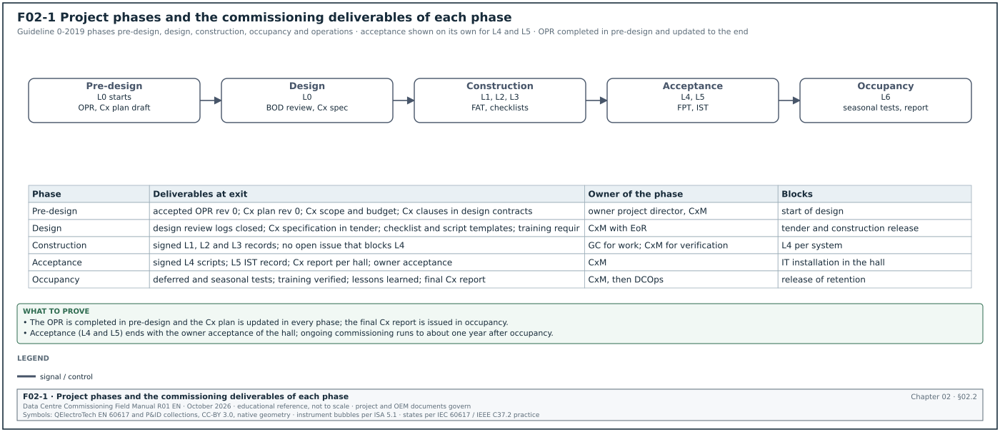
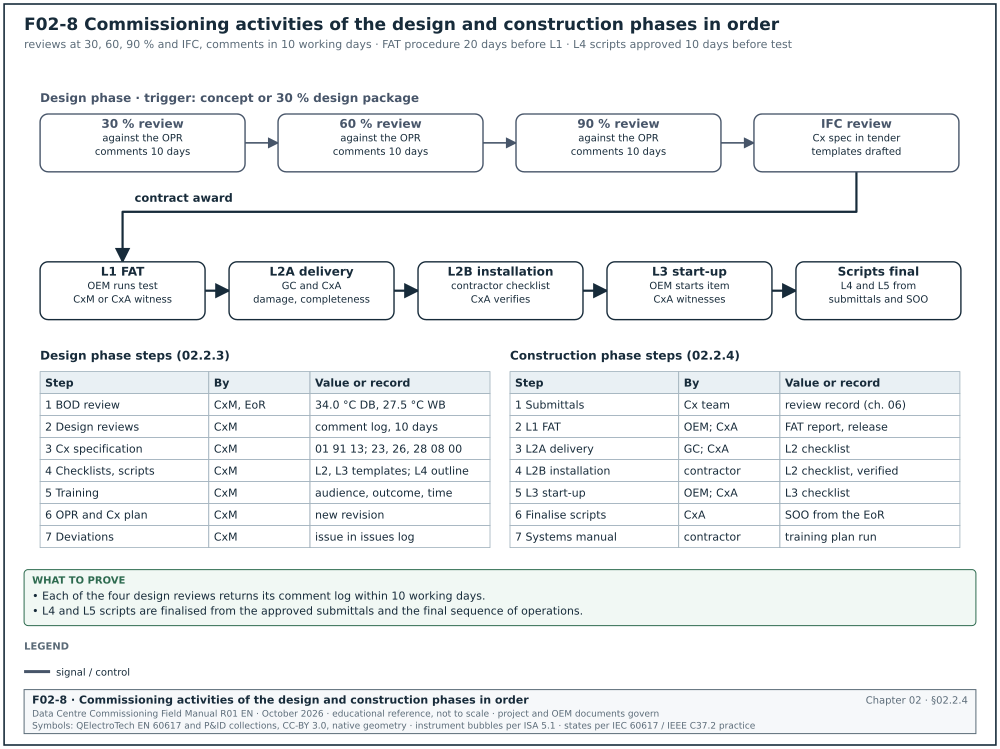
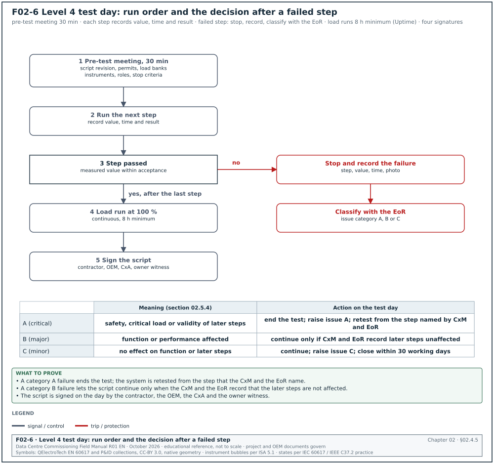
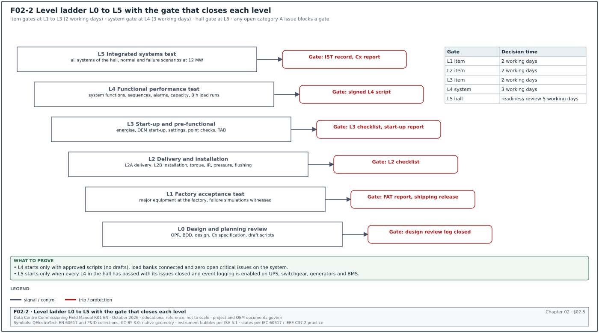
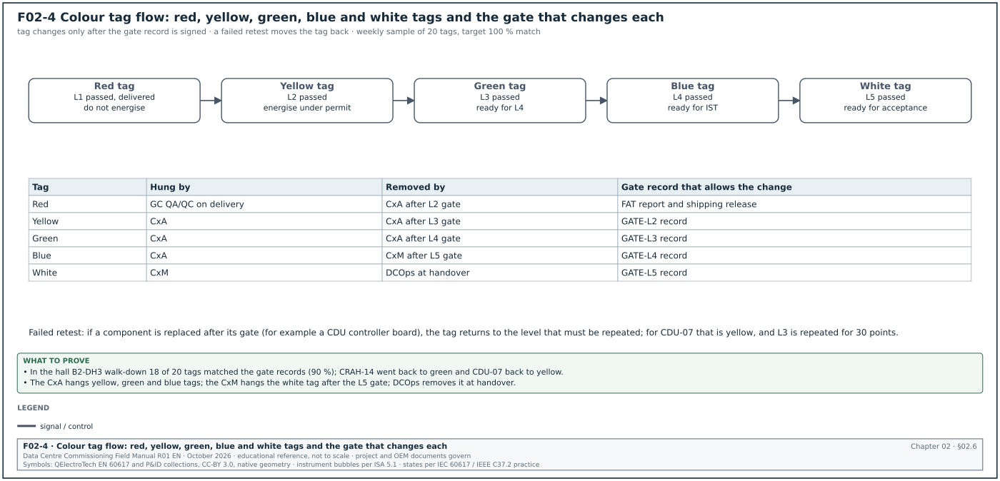
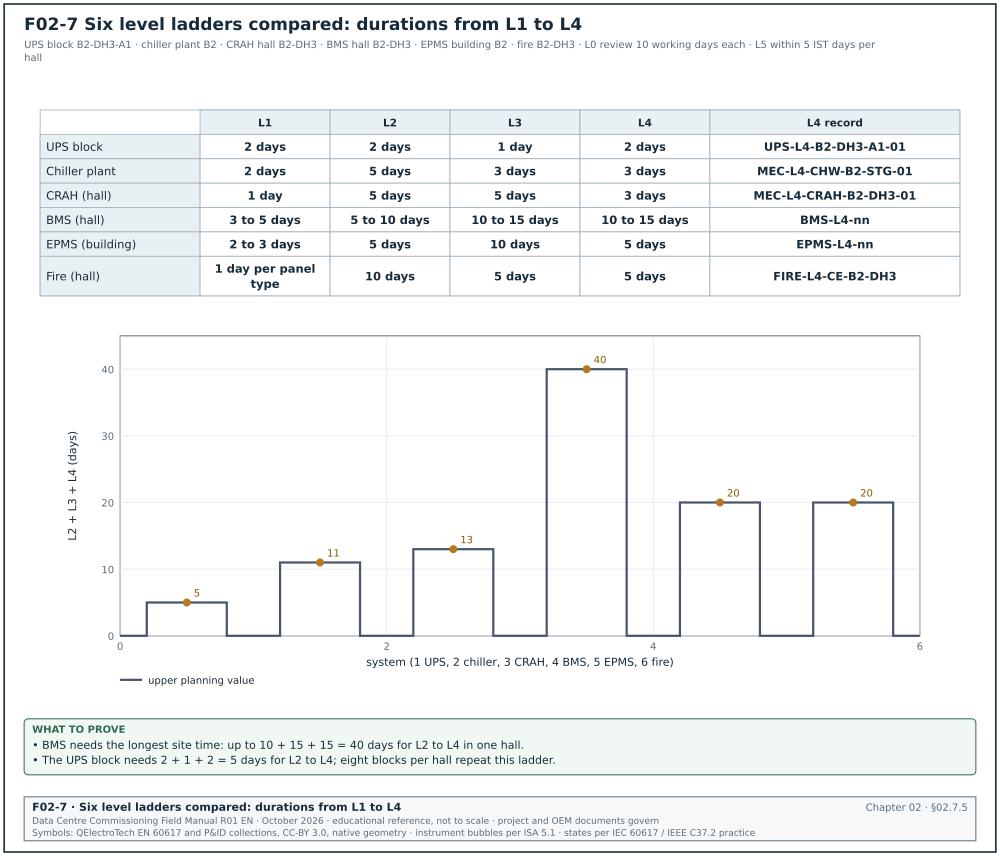
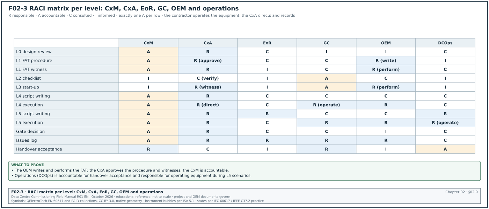
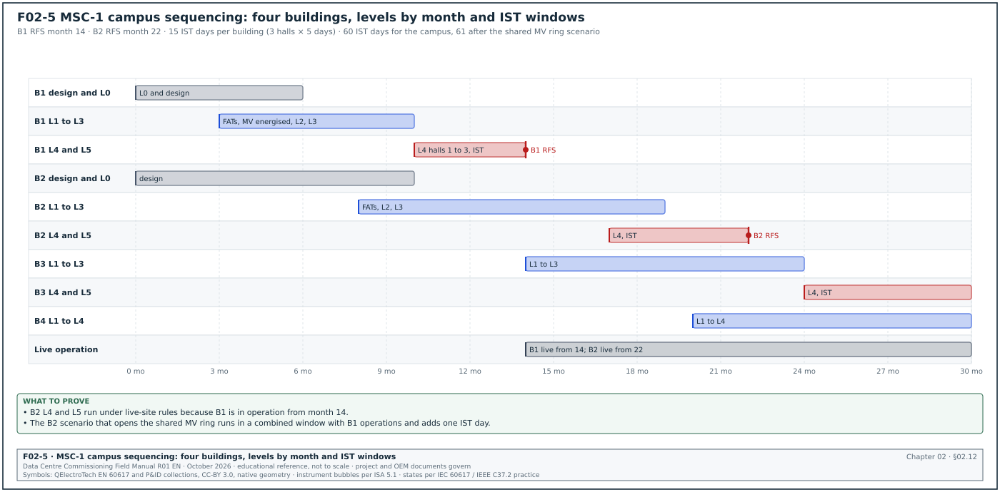

02.0Scope of this chapter
This chapter explains the commissioning process on a hyperscale data-centre campus from the first design review to the end of the first year of operation. It defines the project phases and the commissioning levels Level 0 (L0) to Level 5 (L5), with Level 6 (L6) where a project uses it. It also defines the gates between levels, the tag colours, the roles and the responsibility matrices. It ends with the differences between a leased and a self-built facility and with the sequencing of a multi-building campus.
- Purpose of commissioning. What commissioning is, what it verifies and why a data centre needs a deeper process than an office building.
- Project phases. The four phases of ASHRAE Guideline 0-2019 and the acceptance phase used in older and data-centre models, with the activities and deliverables of each.
- Commissioning levels. Definitions of L0 to L6, who publishes each definition, entry and exit criteria, durations, performers, witnesses and records.
- Gates and tags. The gate review between levels and the colour tag practice.
- Level ladders by system. Worked ladders for the uninterruptible power supply (UPS), chiller, computer room air handler (CRAH), building management system (BMS), electrical power monitoring system (EPMS) and fire systems.
- Roles. Owner commissioning manager (CxM), commissioning authority or provider (CxA), engineer of record (EoR), general contractor (GC), mechanical, electrical and plumbing (MEP) subcontractors, original equipment manufacturers (OEM). The roles also include the controls integrator, testing, adjusting and balancing (TAB) contractor, electrical testing company and data-centre operations (DCOps). The chapter also covers environment, health and safety (EHS), quality assurance and quality control (QA/QC), and the authorities: PLN (the state electricity company), the accredited technical inspection body (LIT) and the fire authority.
- Responsibility matrices. Responsible, accountable, consulted, informed (RACI) matrices per level and per document.
- Delivery models and campus sequencing. Lease versus build, owner-furnished and contractor-furnished equipment, and the sequencing of four buildings with shared plant and energisation.
Documents and sources used: ASHRAE Guideline 0-2019 and Standard 202-2024 (through the 2020 ASHRAE course), the International Facility Management Association (IFMA) Facility Management Journal (FMJ) article on the Level 0 to 6 data-centre framework (NEBB, August 2026). The chapter also uses the Uptime Institute Journal article on mission-critical commissioning and the CxPlanner description of tag colours. It also uses the Archdesk level gate tables, chapter 04 and chapter 22 of this manual, research notes RF-02 and RN-04, and the MSC-1 case ledger.
02.1What commissioning is and why a data centre needs it
02.1.1Definition
ASHRAE Guideline 0 describes commissioning as a quality-focused process for achieving, validating and documenting that a facility and its systems meet the owner's project requirements (OPR). The ASHRAE course on Guideline 0 and Standard 202 names three elements of the process: communication, documentation and verification (source 1). All three begin in pre-design and continue to occupancy.
On a data-centre campus, commissioning verifies four things.
- Installation. Each item is the approved item, undamaged, installed as drawn and connected correctly.
- Function. Each item and each system performs its functions, including alarms, interlocks and failure responses.
- Performance. Each system delivers its capacity and efficiency at design load and at design ambient conditions.
- Integration and resilience. All systems together carry the critical load through every normal operation, maintenance operation and single failure that the design claims to tolerate.
02.1.2Why the data-centre process is deeper
The IFMA article written by NEBB contrasts a traditional four-phase commissioning model (design, construction, acceptance, warranty and occupancy) with a data-centre model of Levels 0 to 6. It states that the data-centre model "adds explicit readiness gates, QA/QC artifacts, and multi-party witnessing". The data-centre model progresses from factory to site, from components to systems and finally to fully integrated facility testing under normal and failure scenarios (source 2). Uptime Institute states that the rigour of data-centre commissioning has little relationship to the Tier level and that representative testing should not be accepted for mission-critical systems (source 3).
| Item | Office building commissioning | Hyperscale data-centre commissioning | What the CxM does |
|---|---|---|---|
| Structure | Phases | Phases and levels L0 to L5 or L6 with gates | Write the levels and gates into the Cx plan (section 02.3) |
| Sampling | 5 % to 10 % sampling recommended by ASHRAE for verification | 100 % of critical power and cooling components at L3 to L5; sampling only for non-critical L2 items | State 100 % testing of critical items in the Cx plan |
| Load | Building load at handover | Load banks or heater skids at 100 % design IT load, for example 12 MW per hall in the MSC-1 worked example | Book load banks or heater skids for the full design IT load |
| Failure tests | Few | Every single failure that the topology claims to tolerate, tested at load | List every claimed single failure as an L5 scenario |
| Witnesses | Commissioning provider | Owner CxM, CxA, EoR, OEM, operations team, and certification body where used | Name each witness party in the Cx plan |
| Records | Checklists and test forms | Signed scripts with measured values, trend files, power quality files and photos per step | Accept only scripts with measured values and the attached files |
| Duration | Weeks | Months per building; 5 integrated systems test (IST) days per hall in the MSC-1 worked example | Programme months per building and 5 IST days per hall |
02.2Project phases and their commissioning activities


02.2.1The phases of ASHRAE Guideline 0-2019
Guideline 0-2019 is organised by the phases of the building acquisition process: pre-design, design, construction, and occupancy and operations (source 1). The older four-phase model described by NEBB uses design, construction, acceptance, and warranty and occupancy (source 2). This manual uses five phases so that the acceptance work of a data centre (L4 and L5) is visible on its own. Figure F02-1 shows the phases with their main deliverables.
| Phase | Commissioning objective (Guideline 0-2019) | Main activities | Deliverables at exit | Levels |
|---|---|---|---|---|
| Pre-design | Start the process: OPR, scope, budget, team | Hire the CxA; set Cx scope and budget; draft Cx plan; write OPR; put Cx duties in design contracts; set issues log and systems manual format | Accepted OPR; Cx plan draft; Cx scope and budget; design checklists | L0 starts |
| Design | Verify design decisions and prepare for construction | Verify the basis of design (BOD); OPR-based design reviews; write Cx specification; draft construction checklists and test procedures; define training requirements; update OPR and Cx plan | Design review logs closed; Cx specification in tender; draft checklists and scripts; training requirements | L0 |
| Construction | Verify that construction meets the OPR and prepare for handover | Submittal verification; factory acceptance test (FAT); delivery inspection; installation checklists; start-up; finalise scripts; implement training; prepare systems manual | Signed L1, L2 and L3 records; issues log with no open item that blocks L4 | L1, L2, L3 |
| Acceptance | Prove function, performance and resilience | Functional performance tests per system; integrated systems test per hall and per building; certification demonstrations | Signed L4 and L5 records; Cx report per hall; owner acceptance | L4, L5 |
| Occupancy and operations | Close out and confirm operation | Seasonal and deferred tests; training verification; lessons-learned workshop; final Cx process report; warranty review about one year after occupancy | Final Cx report; lessons-learned log; systems manual accepted | L6 where used |
02.2.2Pre-design phase in detail
Purpose: Set the requirements, the scope and the team before design starts.
Owner: Owner project director, with the owner CxM.
Trigger: Approval of the project or the campus phase.
Steps:
- Appoint the CxM and the CxA. The owner appoints its commissioning manager and, where used, a third-party CxA. ASHRAE recommends a commissioning provider with actual and perceived independence (source 1). Allow 20 working days for the CxA tender.
- Set the Cx scope. List the systems to be commissioned: medium-voltage (MV) and low-voltage (LV) power, generators, UPS, batteries, mechanical plant, air and liquid cooling, fire, BMS, EPMS, operational technology (OT) network, security, data-centre infrastructure management (DCIM) interfaces and the building enclosure.
- Set the budget. Include CxA fees, load banks, heater skids, fuel for generator tests, temporary chillers if any, instruments and the operations team's time.
- Write the OPR. The owner and the Cx team write the OPR with verifiable benchmarks (chapter 03). Allow 15 working days for the first draft and 5 working days for owner review.
- Write the Cx plan draft. The CxM writes the first Cx plan: scope, team, schedule for design activities, outline of later phases (chapter 03).
- Put Cx duties in design contracts. The design services contracts state the EoR's Cx duties: BOD, response time to design review comments, sequence of operations, attendance at L4 and L5.
- Set the issues log and systems manual formats. The issues log fields and the systems manual structure are fixed now so that they are used from the first design review.
- Collect lessons learned. Review the lessons-learned log of the previous building or campus.
Records: Accepted OPR revision 0; Cx plan revision 0; CxA appointment letter; design contract Cx clauses.
02.2.3Design phase in detail
Purpose: Verify that the design can deliver the OPR, and put commissioning into the construction documents.
Owner: CxM, with the EoR.
Trigger: Issue of the concept design (or the 30 % design package).
Steps:
- Review the BOD. Check that the BOD records the codes, the redundancy, the load assumptions, the climate data (in the MSC-1 worked example, 34.0 °C dry bulb and 27.5 °C wet bulb), the control sequences and the equipment basis.
- Review the design at 30 %, 60 %, 90 % and issued for construction. Each review checks the design against the OPR. Return comments within 10 working days (chapter 06 gives the comment log).
- Write the Cx specification. The CxM writes or reviews section 01 91 13 and the discipline Cx sections (23 08 00, 26 08 00, 28 08 00). These sections put the contractor's duties, the witness notice period and the retest cost into the tender.
- Draft the checklists and scripts. L2 and L3 checklist templates and L4 script outlines are drafted from the design. They are finalised in construction from the approved submittals.
- Define training. The training requirements are written into the specifications: audience, outcome, duration and verification.
- Update the OPR and the Cx plan. Changes in the owner's needs are recorded in the OPR with a revision.
- Track deviations. Every design item that does not meet the OPR is an issue in the issues log.
Records: Design review comment logs; Cx specification sections; checklist and script templates; updated OPR and Cx plan.
02.2.4Construction phase in detail
Purpose: Verify that the equipment and the installation meet the contract documents and the OPR, and bring every system to the point where it can be tested at function level.


Owner: GC for the work; CxM for the verification.
Trigger: Contract award.
Figure F02-8 shows the design and construction activities in order, with the person who does each step and the record it produces.
Steps:
- Verify submittals. The Cx team reviews the submittals of commissioned systems against the OPR and the specification and records issues (chapter 06).
- Witness factory tests (L1). The OEM runs the approved FAT procedure; the CxM or CxA witnesses (section 02.4.2).
- Inspect deliveries (L2A). The GC and the CxA inspect each delivery for damage and completeness.
- Inspect the installation (L2B). The contractor completes installation checklists; the CxA verifies.
- Start up the equipment (L3). The OEM starts each item; the contractor completes pre-functional checklists; the CxA witnesses.
- Finalise scripts. L4 and L5 scripts are finalised from the approved submittals and the final sequence of operations. Uptime Institute states that the EoR should give the CxA a finalised sequence of operations so that the CxA can write the L4 and L5 scripts (source 3).
- Prepare the systems manual and training. The contractor and the designers assemble the systems manual; the training plan is implemented.
Records: Signed L1, L2 and L3 records; submittal review records; issues log.
02.2.5Acceptance phase in detail
Purpose: Prove function, performance and resilience at design load before the owner accepts the hall.
Owner: CxM.
Trigger: L3 complete for the systems in the test scope with no open issue that blocks L4.
Steps:
- Run L4 functional performance tests. Each system is tested against its script at defined loads.
- Run L5 integrated systems tests. All systems in the hall are tested together under normal and failure scenarios (chapter 28).
- Hold certification demonstrations. Where the owner seeks Uptime Tier Certification of Constructed Facility, the demonstrations take place after construction of critical systems. Uptime states the visit is 3 to 5 days, a little more than one month after critical systems construction ends (source 4).
- Issue the Cx report per hall. The Cx report lists the results, open issues and deferred tests.
- Obtain owner acceptance. The owner accepts the hall for IT installation, with or without a list of agreed open items.
Records: Signed L4 scripts; L5 IST records; Cx report; owner acceptance certificate.
02.2.6Occupancy and operations phase in detail
Purpose: Complete deferred and seasonal tests, confirm operation and close out the process.
Owner: CxM until the final report; then DCOps.
Trigger: Owner acceptance of the hall.
Steps:
- Run deferred tests. Tests that could not be done before handover (for example tests at full IT load once the tenant IT is installed) are run and recorded.
- Run seasonal tests. ASHRAE lists seasonal and deferred testing in this phase (source 1). In Jakarta there is no cold season. The seasonal test runs in the high wet-bulb and dry-bulb period, the hottest months of the dry season. Take the months from the Indonesian meteorology agency (BMKG) Jakarta station data used for the BOD design conditions.
- Verify training. The operations team demonstrates the procedures that it was trained on.
- Hold a lessons-learned workshop. The Cx team records the lessons in the lessons-learned log for the next building.
- Issue the final Cx process report. The CxM issues the report; the owner accepts it.
- Review before warranty expiry. The ASHRAE course states that ongoing commissioning extends about a year into occupancy, at the expiry of major equipment warranties (source 1).
Records: Deferred and seasonal test records; training verification records; lessons-learned log; final Cx process report.
02.3Commissioning levels L0 to L6: who defines what
02.3.1Sources of level definitions
There is no single published standard for commissioning levels. ASHRAE Guideline 0 is organised by phase and does not number levels. Uptime Institute states that organisations define levels differently, that some activities fit a different level on a given project, and that a complete programme includes all five levels (source 3). The table lists the definitions found in this research.
| Publisher | Levels | Definition used | Notes |
|---|---|---|---|
| Uptime Institute Journal | 1 to 5 | L1 factory, L2 site acceptance and installation checks, L3 start-up and component checks, L4 functional and load bank tests, L5 integrated systems test | States that numbering varies by organisation |
| IFMA FMJ article by NEBB (2026) | 0 to 6 | L0 design, planning and construction review; L1 procurement and factory witness testing; L2A site acceptance and L2B installation and pre-energisation; L3 start-up; L4 functional performance test (FPT); L5 integrated system test (IST); L6 turnover and occupancy | Splits L2 into 2A and 2B |
| CxPlanner | 1 to 5 with tag colours | L1 red, L2 yellow, L3 green, L4 blue, L5 white | Notes that some teams use L0 or levels up to L7 |
| Archdesk | 1 to 5 | Gate table with entry, tests, exit and witnesses per level | States that level boundaries vary by specification |
| Schneider Electric White Paper 148 | not numbered | Component start-up followed by integrated commissioning; "as built" script report and component error log | Describes the documents of integrated commissioning |
| This manual | 0 to 5, with 6 where the project uses it | As table 02.3.2 | Follows the project Cx plan when it differs |
Check: At the start of every project, the CxM writes the level definitions into the Cx plan and asks every contractor to confirm them in writing. A "Level 3" in one contractor's schedule can mean another contractor's Level 4.
02.3.2Level definitions used in this manual
| Level | Name | What is verified | Typical location | Ends with |
|---|---|---|---|---|
| L0 | Design and planning review | OPR, BOD, design, Cx specification, scripts in draft | Office | Design review logs closed for the issued-for-construction package |
| L1 | Factory acceptance test (FAT) | Each item of major equipment against its specification at the factory | OEM factory | Signed FAT report and shipping release |
| L2 | Delivery and installation inspection (L2A delivery, L2B installation) | Condition on arrival; installation quality; pre-energisation tests (torque, insulation resistance, pressure test, flushing) | Site, de-energised | Signed L2 checklist; red tag removed |
| L3 | Start-up and pre-functional checks | First energisation, OEM start-up, settings, point-to-point checks, calibration, TAB | Site, energised item by item | Signed L3 checklist; equipment ready for functional test |
| L4 | Functional performance test (FPT) | Each system's functions, sequences, alarms, failure responses and capacity at defined load | Site, system level, with load banks | Signed L4 script with measured values |
| L5 | Integrated systems test (IST) | All systems together through normal, maintenance and failure scenarios at design load | Site, hall or building | Signed IST record and Cx report |
| L6 | Turnover and occupancy (where used) | Closeout, training, systems manual, deferred and seasonal tests, final report | Site in operation | Final Cx report accepted |
02.3.3Level entry and exit criteria
| Level | Entry criteria | Exit criteria | Blocks |
|---|---|---|---|
| L0 | OPR draft issued; design package issued for review | All comments answered; OPR issues closed or accepted by owner | Release of the package for tender or construction |
| L1 | FAT procedure approved by the CxA at least 10 working days before the test; calibrated instruments listed; witness dates confirmed | Every FAT step passed or a deviation accepted in writing; shipping release signed | Shipment of the equipment |
| L2 | Equipment delivered; installation complete for the item; method statement approved; L1 issues closed or carried with owner acceptance | Checklist complete and signed; pre-energisation tests passed; issues that block energisation closed | First energisation of the item |
| L3 | L2 signed; energisation permit issued (chapter 10); OEM start-up engineer on site; settings file approved | Start-up report signed by OEM; pre-functional checklist signed; points verified; no open issue that blocks L4 | L4 test of the system |
| L4 | L3 signed for every item in the system; L4 script at approved revision (no draft scripts); load banks connected; zero open critical issues on the system | Every step passed; measured values recorded; retests closed; issues log updated | L5 for the hall |
| L5 | L4 passed for every system in the hall with issues closed; IST script approved by owner and CxA; event logging enabled on UPS, switchgear, generators and BMS; fire detection active | Every scenario passed; zero open critical issues; all other issues have a closure date | Owner acceptance of the hall |
| L6 | Owner acceptance of the hall | Deferred and seasonal tests done; training verified; final report accepted | Release of retention and end of the CxA contract |
The L4 entry rule "no draft scripts" and the L5 rule "event logging enabled on UPS, switchgear, generators and BMS" are taken from the Archdesk gate tables (source 6). The L5 prerequisite that all Level 4 testing has passed with issues closed is stated in the NEBB article (source 2).
02.4Each level in detail
02.4.1Level 0: design and planning review
Purpose: Find design faults before they are built, and prepare the commissioning documents.
Owner: CxM; reviewers from the CxA and the operations team.
Trigger: Issue of each design package.
Steps:
- Register the package. Log the package in the design review register with the date received. Start the 10 working day review clock.
- Review against the OPR. Check each OPR requirement against the drawings, the specification and the BOD. Record each gap as a comment with the OPR clause.
- Review for testability. Check that each system can be tested: test points, load bank connection points, isolation valves for testing, BMS points for every alarm in the script, metering for capacity tests.
- Review for maintainability. Check that each item can be maintained without dropping the critical load, as the Tier objective requires.
- Issue comments. Return the comment log within 10 working days.
- Close comments. The EoR answers within 10 working days; the CxM closes or escalates each comment.
Records: Design review comment log with status per comment; OPR traceability matrix.
Common errors:
- No load bank connection points. The design shows no load bank cabinets or connection points for the generator and UPS tests. A late finding costs weeks of temporary cabling.
- Missing test isolation valves. A chiller cannot be isolated for a capacity test without draining a header.
02.4.2Level 1: factory acceptance test
Purpose: Prove that each item of major equipment meets its specification before it leaves the factory.
Owner: OEM performs; CxM or CxA witnesses.
Trigger: Equipment ready for test at the factory; FAT procedure approved.
Steps:
- Approve the FAT procedure. The OEM submits the procedure at least 20 working days before the test. Uptime states that OEMs should provide the written test procedure for approval before L1 (source 3). The CxA returns comments within 5 working days.
- Confirm the witnesses. Confirm witness names, travel and the test date at least 10 working days before. Archdesk recommends confirming owner witness dates at least 30 days ahead (source 6).
- Check the instruments. At the start of the test, check the calibration certificate of each instrument against its serial number.
- Witness the steps. Witness every step marked as a witness point. Witness every failure simulation; do not accept a report of a failure test that was not seen.
- Record deviations. Record each failed step in the FAT punch list with a category.
- Sign the report and the shipping release. The shipping release is signed only when all steps have passed or the deviations are accepted in writing by the owner.
Records: FAT procedure approved; FAT report signed; FAT punch list; shipping release; L1 tag.
02.4.3Level 2: delivery and installation inspection
Purpose: Prove that the equipment arrived undamaged and was installed correctly before it is energised or filled.
Owner: Installing contractor performs; GC QA/QC verifies; CxA witnesses by sample or in full as the Cx plan states.
Trigger: Delivery (L2A); installation complete (L2B).
Steps:
- Inspect the delivery (L2A). Check the shipping indicators (shock and tilt indicators), packaging, nameplate data against the approved submittal, accessories and documents. Record within 1 working day of delivery.
- Record the asset. Enter the asset tag, make, model and serial number in the asset register. Uptime states that asset data should be logged into the maintenance system on receipt (source 3).
- Inspect the installation (L2B). Check location, levelling, fixings, clearances, labels, cable terminations, torque marks, earthing, pipe supports, valves and insulation against the drawings and the OEM manual.
- Run the pre-energisation tests. Torque checks, insulation resistance, continuity, pressure tests and flushing as the checklist states. The NEBB article lists 100 percent torque checks, megger and continuity, pressure testing, flush and fill in L2B (source 2).
- Sign the checklist. The installing contractor signs; the GC QA/QC signs; the CxA signs the items it witnessed.
Records: L2A delivery checklist; L2B installation checklist; test sheets; photos; L2 tag.
02.4.4Level 3: start-up and pre-functional checks
Purpose: Energise or start each item, set it up and prove that each component works on its own.
Owner: OEM performs start-up; contractor performs pre-functional checks; CxA witnesses.
Trigger: L2 signed; energisation permit issued.
Steps:
- Issue the energisation permit. The permit to work and energisation procedure of chapter 10 apply.
- Energise or start. The OEM start-up engineer starts the item using the OEM start-up procedure.
- Apply settings. Load the approved settings file (protection settings, control setpoints, network addresses) and record the file version.
- Check points. Verify every BMS and EPMS point of the item point to point (chapters 22 and 24).
- Calibrate sensors and stroke actuators. Record the as-found and as-left values.
- Run TAB. The TAB contractor balances air and water systems. NEBB lists TAB at 100 percent water side and air side in L3 (source 2).
- Sign the start-up report and the pre-functional checklist. The OEM start-up engineer signs the start-up report. The contractor and the CxA sign the pre-functional checklist.
Records: OEM start-up report; settings file record; point-to-point sheets; calibration records; TAB report; L3 tag.
02.4.5Level 4: functional performance test
Purpose: Prove each system's functions, sequences, alarms, failure responses and capacity at defined loads.


Owner: CxA or CxM writes and directs the script; contractor and OEM operate the equipment; owner operations witness.
Trigger: L3 signed for every item in the system; script approved.
Steps:
- Hold the pre-test meeting. Confirm the script revision, the permits, the load banks, the instruments, the roles and the stop criteria. Allow 30 minutes on the test day.
- Run the script steps in order. Record the measured value, the time and the result for each step.
- Stop on a failure. On a failed step, stop, record the failure and raise the issue with its category (section 02.5.4). A category A failure ends the test. A category B failure lets the script continue only when the CxM and the EoR record that the later steps are not affected. Figure F02-6 shows the run order and the action for each category.
- Run load tests for the stated duration. Uptime recommends at least 8 hours continuous runtime for all load bank tests (source 3).
- Sign the script. Contractor, OEM, CxA and owner witness sign the script on the day.
Records: Signed L4 script with measured values; trend files; power analyser files; issues raised; L4 tag.
02.4.6Level 5: integrated systems test
Purpose: Prove that all systems of a hall or building work together through normal, maintenance and failure scenarios at design load.
Owner: CxM directs; CxA records; contractor, OEMs and operations operate.
Trigger: L4 passed for every system in the hall with issues closed.
Steps:
- Confirm readiness. Hold the IST readiness review 5 working days before the start (chapter 28 lists the readiness checklist).
- Confirm the load. In the MSC-1 worked example a hall needs 12 MW of load: 9.6 MW of liquid heater skids and 2.4 MW of air heaters.
- Run the scenarios. Run each scenario in the approved order with observers at the stated positions. Uptime recommends that fire detection and suppression stay active during L5 and that equipment is isolated at the upstream breaker (source 3).
- Record the results. Record the expected response, the actual response, the time stamps and the result for each scenario.
- Restore and recover. Return the hall to normal between scenarios and confirm recovery to the stated conditions before the next scenario.
- Sign the IST record. The CxM, the CxA, the GC and the DCOps lead sign the record at the end of the last IST day.
Records: IST record; event logs from UPS, switchgear, generators, BMS and EPMS; trend files; issues; L5 tag.
02.4.7Level 6: turnover and occupancy
Purpose: Close out the commissioning of the hall and confirm operation in its first year.
Owner: CxM; DCOps receives.
Trigger: Owner acceptance.
Steps:
- Compile closeout records. Collect the L1 to L5 records into the commissioning record set.
- Close or transfer issues. Close the issues log or transfer open items to the defects list with owners and dates.
- Deliver training and the systems manual. The CxA verifies the training records and the systems manual content against the training plan and the systems manual outline.
- Run deferred and seasonal tests. Record each test on its script with the measured values.
- Hold the lessons-learned workshop and issue the final report. The CxM issues the final Cx report; the owner accepts it.
Records: Commissioning record set; final Cx report; lessons-learned log.
02.4.8Typical durations per level and system
The durations below are planning values for one MSC-1 hall (12 MW, 8 blocks of 2.5 MVA, 16 coolant distribution units (CDU)). They are examples for planning; the project programme governs.
| System | L1 (per unit type) | L2 | L3 | L4 | L5 |
|---|---|---|---|---|---|
| MV switchgear, block transformers | 3 to 5 days | 10 days | 5 days | 3 days | part of 5 IST days |
| LV switchboards and busway | 2 to 3 days | 10 days | 5 days | 3 days | part of 5 IST days |
| Generators (17 per building) | 1 day per unit | 2 days per unit | 1 day per unit | 8 h load bank per unit plus 2 days parallel tests | part of IST |
| UPS (8 blocks per hall) | 2 days per type | 2 days per block | 1 day per block | 2 days per block | part of IST |
| Chillers and dry coolers | 2 days per type | 5 days | 3 days | 3 days | part of IST |
| CRAH and fan walls | 1 day per type | 5 days | 5 days | 3 days | part of IST |
| CDUs (16 per hall) | 1 day per type | 5 days | 5 days | 4 days | part of IST |
| BMS | 3 to 5 days per software package | 5 to 10 days | 10 to 15 days | 10 to 15 days | part of IST |
| EPMS | 2 to 3 days | 5 days | 10 days | 5 days | part of IST |
| Fire detection and suppression | 1 day per panel type | 10 days | 5 days | 5 days | part of IST |
The BMS durations match table 22.1.2 of this manual.
02.5Gates between levels


02.5.1What a gate is
A gate is a formal review at the end of a level that decides whether the next level may start. Figure F02-2 shows the ladder with its gates. The gate is held for each item (L1 to L3) or for each system (L4) or for each hall (L5).
02.5.2Gate review procedure
Purpose: Stop the next level from starting on equipment or systems that are not ready.
Owner: CxM chairs; CxA presents; GC, OEM and owner operations attend.
Trigger: The contractor requests the next level in writing.
Steps:
- Receive the request. The contractor submits the gate request with the list of records. The CxM logs it with the date.
- Check the records. The CxA checks that every record named in the exit criteria is signed and filed in the common data environment (CDE). Allow 2 working days for an item gate and 3 working days for a system gate.
- Check the issues log. List the open issues against the item or system. Any open critical issue blocks the gate.
- Decide. The gate result is one of three: passed; passed with conditions (named issues with closure dates that do not affect the next level); or failed.
- Record the decision. Record the decision, the conditions and the signatures in the gate record.
- Change the tag. Where tags are used, the tag is changed only after the gate record is signed (section 02.6).
Records: Gate request; gate record with decision and conditions; updated tag log.
02.5.3Gate record fields
| Field | Type | Example |
|---|---|---|
| Gate ID | text | GATE-L4-B2-DH3-UPS-A1 |
| Level completed | choice L0 to L6 | L3 |
| Item or system | asset tag or system code | B2-DH3-UPS-A1 |
| Records checked | list of record IDs | ELE-L2-UPS-B2-DH3-A1-01 rev 0; ELE-L3-UPS-B2-DH3-A1-01 rev 0; OEM start-up report SU-4471 |
| Open issues | list of issue IDs with category | ISS-B2-1182 (C, label missing) |
| Decision | choice: passed, passed with conditions, failed | passed with conditions |
| Conditions | text with closure dates | ISS-B2-1182 closed by 2027-03-12 |
| Signed by | names and roles | CxM, CxA lead, GC Cx coordinator, DCOps lead |
| Date | date | 2027-03-05 |
02.5.4Issue categories that affect gates
The MSC-1 case ledger uses three issue categories with ageing limits (A 1 working day, B 7 working days, C 30 working days). Issues and punch items use this one scheme; section 09.8.2 gives the full definitions and section 09.9.1 states the rule. The table shows how each category affects a gate.
| Category | Meaning | Ageing limit (MSC-1) | Effect on the gate |
|---|---|---|---|
| A (critical) | Affects safety, the critical load, or the validity of the next test | 1 working day | Blocks the gate |
| B (major) | Affects function or performance; the next test can run but the result may be affected | 7 working days | Blocks the gate unless the CxM and EoR record that the next level is not affected |
| C (minor) | Does not affect function or the next test (labels, paint, documentation format) | 30 working days | Does not block; listed as a condition |
02.6Colour tag practice


02.6.1What the tags are
Many data-centre projects hang a coloured tag on each item of equipment to show the last level it has passed. CxPlanner describes the common scheme (source 5). It is: Level 1 red tag (factory testing), Level 2 yellow tag (pre-installation), Level 3 green tag (pre-commissioning), Level 4 blue tag (functional performance testing) and Level 5 white tag (integrated systems testing). The colours are project practice. Some projects use the colours with different meanings, for example red for "not energised, do not operate". The Cx plan states the scheme. Figure F02-4 shows the tag flow.
| Tag | Hung when | Meaning on site | Who hangs it | Who may remove it |
|---|---|---|---|---|
| Red | L1 passed and the item is delivered | Item passed FAT; not inspected on site; do not energise | GC QA/QC on delivery | CxA after L2 gate |
| Yellow | L2 passed | Installed and inspected; pre-energisation tests passed; may be energised under permit | CxA | CxA after L3 gate |
| Green | L3 passed | Started up and checked as a component; ready for functional test | CxA | CxA after L4 gate |
| Blue | L4 passed | System passed functional test; ready for IST | CxA | CxM after L5 gate |
| White | L5 passed | Passed IST; ready for owner acceptance | CxM | DCOps at handover |
02.6.2Rules for tags
- The tag follows the gate record. A tag is changed only after the gate record is signed. A tag without a gate record is a defect.
- One tag per item. The new tag replaces the old one. Keep the removed tag in the item file or photograph it.
- The tag carries data. Each tag shows the asset tag, the level, the gate ID, the date and the signature.
- A tag is not a lock. A colour tag does not replace the lockout and tagout (LOTO) tags and locks of the permit system (chapter 10). The two must look different.
- A failed retest moves the tag back. If a later test fails and the item is changed (for example a replaced controller board), the tag goes back to the level that must be repeated.
- The tag log matches the CDE. A weekly walk-down compares a sample of 20 tags with the gate records.
Worked example: Tag check in hall B2-DH3. During the weekly walk-down on 18 March 2027 the CxA checks 20 tags in hall B2-DH3. Eighteen match the gate records. Two do not. CRAH B2-DH3-CRAH-14 has a blue tag but the gate record GATE-L4-B2-DH3-CRAH-14 is not signed, because the fan wall alarm test failed on 15 March. CDU B2-DH3-CDU-07 has a green tag but its controller board was replaced on 16 March after L4. The CxA moves CRAH-14 back to green and CDU-07 back to yellow (L3 must be repeated for the new board: settings, point-to-point checks of 30 points, and the start-up record). The CxA records both corrections in the tag log and raises issue ISS-B2-1240 (category B) for the tag process. The tag accuracy for the week is 18 of 20, 90 %, below the 100 % target.
02.7Level ladders by system
The values are MSC-1 worked examples. The project scripts and OEM documents govern.
02.7.1UPS ladder
Worked example: UPS ladder for block B2-DH3-A1 (2.5 MW UPS system, 5 min battery runtime at full load from the MSC-1 ledger).
| Level | Activity | Performed by | Witnessed by | Duration | Record |
|---|---|---|---|---|---|
| L0 | Review UPS submittal, battery sizing (about 301 kWh screening value from the ledger for 2.5 MW for 5 min with margins), single-line, bypass arrangement, EPMS points | EoR, CxM | CxA | 10 working days | Design review log DR-B2-UPS |
| L1 | FAT of UPS modules: insulation, functional checks, efficiency at 25, 50, 75 and 100 % load, transfer to bypass and back, step load 0 to 100 %, alarms | OEM | CxA, owner electrical lead | 2 days | FAT report UPS-L1-FAT-B2-01 |
| L2 | Delivery check; installation, cable terminations, torque, insulation resistance (IR) of cables at 1,000 V DC, battery rack installation, earthing | Electrical contractor | CxA (witnesses a 10 % sample of the torque marks, which the contractor checks at 100 %; reviews all IR results) | 2 days | ELE-L2-UPS-B2-DH3-A1-01 |
| L3 | OEM start-up; battery string voltage and internal ohmic values; settings; alarm and EPMS point-to-point checks; L3 checklist (chapter 03) | OEM, electrical contractor, EPMS contractor | CxA | 1 day | ELE-L3-UPS-B2-DH3-A1-01; OEM start-up report |
| L4 | Load bank test at 100 % for 8 h; step loads; loss of input; return of input; transfer to static bypass and back; maintenance bypass; battery discharge to end voltage at full load; harmonics and efficiency | OEM, electrical contractor, load bank supplier | CxM, CxA, owner operations | 2 days | UPS-L4-B2-DH3-A1-01 |
| L5 | Loss of utility; generator start and transfer; UPS carries load on battery; return to utility | CxM | Owner, CxA, operations | part of 5 IST days | IST-B2-DH3 day 2 |
02.7.2Chiller ladder
Worked example: Chiller ladder for the building B2 air-hall chilled-water plant. The cold loop runs at 18 °C supply and 24 °C return with 5 chillers of 2.5 MW, 4 duty and 1 standby (example value). Chapter 18 sizes the warm-loop trim chiller plant.
| Level | Activity | Performed by | Witnessed by | Duration | Record |
|---|---|---|---|---|---|
| L0 | Review chiller selection at 34.0 °C dry bulb design; staging sequence; flow limits; BMS points | EoR, CxM | CxA | 10 working days | DR-B2-CHW |
| L1 | Factory performance test to AHRI 550/590 conditions: capacity, power, efficiency at 100, 75, 50 and 25 % load; safeties | OEM | CxA, owner mechanical lead | 2 days | MEC-L1-FAT-CH-B2-01 |
| L2 | Delivery check; installation; vibration isolators; piping connections; pressure test of field piping; flushing per BSRIA BG 29; power cable IR | Mechanical and electrical contractors | CxA | 5 days | MEC-L2-CH-B2-01 to -05 |
| L3 | OEM start-up; refrigerant charge check; safeties; flow switch; sensor calibration; BMS point-to-point | OEM, controls contractor | CxA | 3 days | MEC-L3-CH-B2-01 to -05 |
| L4 | Staging sequence test (20-step script in chapter 03); capacity test with heater load; restart after power loss; alarm tests | Controls contractor, OEM, mechanical contractor | CxM, CxA, operations | 3 days | MEC-L4-CHW-B2-STG-01 |
| L5 | Chiller trip during IST; restart after utility loss and generator transfer; recovery of chilled water supply temperature | CxM | Owner, CxA | part of IST | IST-B2 day 3 |
02.7.3CRAH ladder
Worked example: CRAH ladder for hall B2-DH3 (air load 2.4 MW per hall from the MSC-1 ledger).
| Level | Activity | Performed by | Witnessed by | Duration | Record |
|---|---|---|---|---|---|
| L0 | Review airflow (168.5 m³/s per hall in the ledger), redundancy, fan control sequence, humidity limits from the ASHRAE Technical Committee (TC) 9.9 class | EoR, CxM | CxA | 10 working days | DR-B2-AIR |
| L1 | FAT of first unit of each type: fan curve, coil capacity check, controller functions, alarms | OEM | CxA | 1 day | MEC-L1-FAT-CRAH-B2-01 |
| L2 | Installation; coil and condensate connections; filters; power IR; pressure test of chilled-water connections | Mechanical and electrical contractors | CxA by sample | 5 days per hall | MEC-L2-CRAH-B2-DH3-nn |
| L3 | Start-up; fan rotation; controller settings; point-to-point; airflow measurement by TAB contractor | OEM, controls contractor, TAB contractor | CxA | 5 days per hall | MEC-L3-CRAH-B2-DH3-nn; TAB report |
| L4 | Supply air temperature control; fan speed control on pressure; unit failure and standby response; alarms; loss of BMS communication | Controls contractor | CxM, CxA | 3 days | MEC-L4-CRAH-B2-DH3-01 |
| L5 | Loss of one CRAH at full air load; loss of chilled water; recovery after utility loss | CxM | Owner, CxA | part of IST | IST-B2-DH3 day 3 |
02.7.4BMS ladder
Worked example: BMS ladder for hall B2-DH3 (1,480 points from chapter 22).
| Level | Activity | Performed by | Witnessed by | Duration | Record |
|---|---|---|---|---|---|
| L0 | Points list, sequence of operation and network design review | EoR, controls contractor | CxM | 10 working days per cycle | Design review log |
| L1 | FAT of panels and software with simulated inputs and outputs | Controls contractor | CxM, operations | 3 to 5 days | BMS-L1-FAT-B2-DH3 |
| L2 | Panel and field device installation inspection; cable tests | Controls and electrical contractors | Cx engineer by sample | 5 to 10 days | BMS-L2-nn |
| L3 | Network checkout; point-to-point checks; calibration; actuator stroke | Controls contractor | Cx engineer (100 % of critical points) | 10 to 15 days | BMS-L3-nn |
| L4 | Loop tuning; sequences; alarms; trends; graphics; failover; restart | Controls contractor with mechanical contractor | CxM, operations | 10 to 15 days | BMS-L4-nn |
| L5 | BMS behaviour in IST scenarios | CxM | Owner, operations | part of IST | IST record |
02.7.5EPMS ladder
Figure F02-7 compares the L1 to L4 durations of the six ladders in this section. The BMS ladder needs the longest site time, up to 40 working days for L2 to L4 in one hall.


Worked example: EPMS ladder for building B2 (431 devices in the chapter 23 worked example).
| Level | Activity | Performed by | Witnessed by | Duration | Record |
|---|---|---|---|---|---|
| L0 | Meter schedule, riser, time synchronisation and integration list review | EoR, EPMS contractor | CxM | 10 working days | DR-B2-EPMS |
| L1 | Server and software FAT with simulated devices; report and alarm templates | EPMS contractor | CxM | 2 to 3 days | EPMS-L1-FAT-B2 |
| L2 | Meter wiring, current transformer (CT) polarity, shorting blocks, network cabling | Switchboard OEM, EPMS contractor | Cx engineer by sample | 5 days | EPMS-L2-nn |
| L3 | Device configuration; communication; point-to-point checks against the switchboard displays; time synchronisation | EPMS contractor | Cx engineer | 10 days | EPMS-L3-nn |
| L4 | Alarms; sequence-of-events time stamps across devices; reports; power quality capture; BMS and DCIM interfaces | EPMS contractor | CxM, operations | 5 days | EPMS-L4-nn |
| L5 | Event records of every IST scenario; time alignment of events from UPS, switchgear and generators | CxM | Owner | part of IST | IST record and EPMS event export |
02.7.6Fire systems ladder
Worked example: Fire detection and clean agent ladder for hall B2-DH3 electrical rooms.
| Level | Activity | Performed by | Witnessed by | Duration | Record |
|---|---|---|---|---|---|
| L0 | Cause-and-effect matrix review; detection layout; agent quantity; interface list (emergency power off (EPO), dampers, CRAH stop, BMS) | Fire engineer, EoR | CxM | 10 working days | DR-B2-FIRE |
| L1 | Panel FAT where specified; agent cylinder certificates | Fire contractor | CxA | 1 day per panel type | FIRE-L1-B2 |
| L2 | Device installation; pipe pressure test; nozzle check; room sealing | Fire contractor | CxA | 10 days | FIRE-L2-nn |
| L3 | Device-by-device test from the real initiating device; panel programming check; enclosure integrity (door fan) test | Fire contractor | CxA | 5 days | FIRE-L3-nn; door fan report |
| L4 | Cause-and-effect test of every interface from real devices: fans stop, dampers close, releases sequence, EPO status to BMS | Fire contractor, controls and electrical contractors | CxM, operations | 5 days | FIRE-L4-CE-B2-DH3 |
| L5 | Fire alarm scenario during IST with all systems live; local fire authority inspection as a separate hold point | CxM | Owner, fire authority | part of IST | IST record; authority acceptance letter |
02.8Roles and responsibilities
02.8.1Role descriptions
| Role | Employed by | Main duties in commissioning | Signs |
|---|---|---|---|
| Owner commissioning manager (CxM) | Owner | Owns the Cx plan, scripts approval, gate decisions, issues log, Cx reports; directs L4 and L5 | Gate records, L4 and L5 scripts, Cx reports |
| Commissioning authority or provider (CxA) | Owner (third party) or owner in-house | Writes or reviews scripts, witnesses all levels, records issues, prepares Cx reports | Witness signatures, issue records |
| Engineer of record (EoR) | Owner (designer) | BOD, sequences of operation, answers requests for information (RFI), confirms design intent, attends L4 and L5 | RFI answers, design deviations |
| Construction manager (CM) | Owner | The owner's representative on site: administers the construction contract, issues site instructions, decides contract matters within its delegated authority, receives notices | Site instructions, owner letters, acceptance of changes within its authority |
| General contractor (GC) or engineering, procurement and construction (EPC) contractor | Owner | Delivers the works, manages subcontractors, Cx coordination, schedules tests, provides labour and permits | Contractor signatures on L2 to L5 records |
| MEP subcontractor | GC | Install and test their systems, complete L2 and L3 checklists | L2 and L3 checklists |
| OEM start-up engineer | OEM, for the owner under owner-furnished, contractor-installed (OFCI) supply or for the GC under contractor-furnished, contractor-installed (CFCI) supply | FAT, start-up, settings, support at L4 and L5 | FAT report, start-up report |
| Controls integrator | GC or owner | BMS and EPMS programming, point-to-point checks, sequences, graphics | BMS and EPMS L3 and L4 records |
| TAB contractor | GC | Air and water balancing, TAB report | TAB report |
| Electrical testing company (NETA) | GC | Electrical acceptance tests to NETA Acceptance Testing Specifications (ATS) | Test reports |
| Data-centre operations (DCOps) | Owner | Reviews scripts for operability, witnesses L4 and L5, receives training, accepts handover | Witness signatures, acceptance |
| EHS lead | Owner and GC | Permit to work, LOTO, energisation safety, load bank safety | Permits |
| QA/QC (led by the GC QA/QC manager) | GC | Inspection and test plans, inspection requests, non-conformance reports (NCR) (chapters 07 and 09) | Inspection records |
| PLN | State utility | Utility connection, protection coordination at the connection, energisation of the intake | Connection and energisation records |
| LIT | Accredited technical inspection body | Inspection and testing for the certificate of operational fitness (SLO) | SLO, inspection report |
| Authority having jurisdiction (AHJ) | Local government (fire authority, building authority) | Fire installation acceptance, building permits, occupancy | Acceptance letter |
| Landlord | Building owner in a leased facility | Commissions the landlord scope and gives the tenant witness access (section 02.11.1) | Landlord commissioning records |
Check: Every chapter and form uses these role names: CxM, CxA, GC, MEP subcontractor, OEM start-up engineer, EoR, CM, DCOps (DCOps lead for the named person), landlord, PLN, AHJ, EHS lead and QA/QC (QA/QC manager for the named person). Always write CxA for the commissioning authority; the ASHRAE term "commissioning provider" appears only where ASHRAE is quoted. Write CM for the owner's representative. Some contract forms name a separate contract administrator: the Engineer in FIDIC 2017, the Project Manager in NEC4 and the Architect in AIA A201. In that case the text uses that contract term and names the contract (chapter 08).
02.8.2Rules on independence and authority
- The contractor operates the equipment. The ASHRAE course states that checklist and test activities that activate a device are done by the contractor under observation of the commissioning provider (source 1). The CxA does not operate breakers or valves during a witnessed test.
- The EoR confirms design intent. Uptime states that the EoR is legally responsible for the design and is the party who confirms that design intent was met (source 3).
- The CxA reports to the owner. The CxA contract is with the owner. On a design-build contract where the GC employs the CxA, the owner keeps its own witness points and its own copy of the issues log.
- The owner accepts. The owner holds the acceptance authority for deviations from the OPR.
- The OEM stays through L5. Uptime recommends that tender documents require on-site OEM technician support through L4 and L5 (source 3).
02.9RACI per level
Figure F02-3 shows the matrix. R means responsible (does the work), A accountable (one party who answers for the result), C consulted, I informed.


| Activity | CxM | CxA | EoR | GC | OEM | DCOps |
|---|---|---|---|---|---|---|
| L0 design review | A | R | C | I | I | C |
| L1 FAT procedure | A | R (approve) | C | C | R (write) | I |
| L1 FAT witness | A | R | I | C | R (perform) | C |
| L2 delivery and installation checklist | I | C (verify) | I | A | C | I |
| L3 start-up and pre-functional | I | R (witness) | I | A | R (perform) | I |
| L4 script writing | A | R | C | C | C | C |
| L4 execution | A | R (direct and record) | C | R (operate) | R | C (witness) |
| L5 script writing | A | R | R (scenarios from design) | C | C | R (operability) |
| L5 execution | A | R | C | R | R | R (operate in scenarios) |
| Gate decision | A | R | C | C | I | C |
| Issues log | A | R | R (design issues) | R (construction issues) | R (equipment issues) | C |
| Handover acceptance | R | C | I | R | I | A |
02.10RACI per document
| Document | CxM | CxA | EoR | GC | OEM | DCOps |
|---|---|---|---|---|---|---|
| OPR | A, R | C | C | I | I | C |
| BOD | C | C | A, R | I | I | I |
| Cx plan | A | R | C | C | I | C |
| Cx specification (01 91 13 and discipline sections) | A | R | C | I | I | I |
| FAT procedure | C | A (approve) | C | I | R | I |
| L2 checklist template | A | R | C | C | C | I |
| L3 checklist template | A | R | C | C | R (start-up content) | I |
| L4 script | A | R | C | C | C | C |
| L5 IST script | A | R | C | C | C | R |
| Issues log | A | R | R | R | R | I |
| Cx progress report | A | R | I | I | I | I |
| Final Cx report | A | R | C | C | I | C |
| Systems manual | A | C (verify) | R (design content) | R (assembly) | R (equipment content) | C |
| Training plan | A | C (verify) | C | R | R | C |
Check: Each row has exactly one A. A row with two A entries is a defect in the matrix. Correct it before the Cx plan is issued.
02.11Delivery models: lease, build, OFCI and CFCI
02.11.1Lease and build
On a self-built campus the owner commissions every system from the utility intake to the rack. In a leased facility a landlord builds the shell and some or all of the infrastructure, and the tenant commissions what it installs. The usual split on hyperscale programmes is shown below.
| Item | Self-build | Lease (powered shell) | Lease (turnkey) |
|---|---|---|---|
| Utility intake and MV | Owner commissions | Landlord commissions; tenant witnesses | Landlord commissions; tenant witnesses |
| Generators, central plant | Owner | Landlord or tenant per lease | Landlord |
| UPS and critical distribution | Owner | Tenant | Landlord; tenant L4 and L5 at the demarcation |
| White-space cooling, containment | Owner | Tenant | Landlord; tenant L4 |
| IST | Owner, full building | Tenant for its hall, with landlord plant in a booked window | Landlord IST; tenant IST at the demarcation |
| SLO | Owner for the whole installation | Each installation needs its own SLO; check whether the landlord SLO covers the tenant installation | Landlord, with tenant installation checked per lease |
| Records | Owner keeps all | Tenant needs the landlord's Cx reports for shared systems | Landlord delivers the Cx record set |
Common errors:
- No access to shared plant tests. The tenant cannot pull the landlord's utility feeder or fail a shared generator outside a landlord window. Write the IST windows into the lease.
- No landlord records. The tenant's IST relies on landlord systems it has never seen tested. Ask for the landlord L4 and L5 records before the tenant IST.
02.11.2OFCI and CFCI
- Owner-furnished, contractor-installed (OFCI). The owner buys long-lead equipment (MV and LV switchgear, transformers, generators, UPS, chillers, sometimes busway and CDUs) under framework agreements. The contractor installs it. FAT and shipping damage sit with the owner's supply contract; installation defects sit with the contractor.
- Contractor-furnished, contractor-installed (CFCI). The contractor buys and installs. All defects sit with the contractor.
- Effect on commissioning. For OFCI equipment the owner's procurement team must attend the FAT and the delivery inspection. The interface between the OEM's start-up and the contractor's installation must be written in the Cx plan. A common dispute is who pays for a failed start-up that an installation fault caused. The Cx plan states who pays before the first start-up.
| Step | OFCI owner role | OFCI contractor role | CFCI contractor role |
|---|---|---|---|
| FAT | Arranges and witnesses | Informed | Arranges; owner witnesses |
| Delivery inspection | Accepts delivery from OEM | Receives and stores | Receives and inspects |
| Installation | Informed | Installs to OEM manual | Installs |
| Start-up | OEM performs under owner contract | Supports, provides access and power | OEM performs under contractor order |
| Warranty | From OEM to owner | Installation warranty | Full warranty |
02.12Campus sequencing and energisation


02.12.1The MSC-1 campus
In the MSC-1 worked example the campus has 4 buildings, each with 3 halls of 12 MW IT load (144 MW in total). Building B1 has a target ready-for-service (RFS) date 14 months after the start of construction and building B2 22 months. Each hall needs 5 IST days, giving 60 IST days for the campus. Figure F02-5 shows the sequence.
02.12.2Dependencies between levels and energisation
- L3 of MV needs the utility. The first MV energisation needs the PLN connection and the recommendation of fitness for energisation (RLB) for the intake. L3 of any downstream electrical item cannot start before its upstream board is energised.
- L4 of cooling needs power and load. Chiller and CDU L4 tests need permanent power and heat load (heater skids or load banks).
- L5 needs all L4. The hall IST needs every system of the hall at L4 passed.
- A live hall next to a construction hall. Once hall 1 is in operation, work on hall 2 runs under the live-site rules of chapter 10. Tests that affect shared systems (central plant, MV ring, generator bus) need an operations approval and a risk assessment.
- Shared plant gets one full IST. The first hall served by a shared plant tests the plant fully. Later halls test the plant in a delta IST for the added capacity and interfaces.
02.12.3Campus sequencing table
| Month from start | B1 | B2 | B3 | B4 |
|---|---|---|---|---|
| 0 to 6 | Structure; L0 complete; L1 FATs | Design | Design | Design |
| 6 to 10 | MV energised; L2 and L3 | Structure; L1 FATs | Design | Design |
| 10 to 13 | L4 halls 1 to 3 | L2 starts | Structure | Design |
| 13 to 14 | L5: 15 IST days; RFS month 14 | L2 and L3 | Structure; L1 FATs | Structure |
| 14 to 21 | Operation; L6 | MV energised under live-site rules; L4 | L2 and L3 | L1 FATs |
| 21 to 22 | Operation | L5: 15 IST days; RFS month 22 | L4 | L2 |
| 22 to 30 | Operation | Operation; L6 | L5 and RFS (planning value from the programme) | L3 and L4 |
Worked example: IST window conflict on the campus MV ring. B2 hall 1 IST is planned for month 21 and includes a scenario that opens the MV ring section that also feeds B1. B1 is live with tenant IT load. The CxM moves the scenario to a combined window with B1 operations. The CxM writes a method statement that keeps B1 on its second intake for the duration of the scenario (about 40 min) and obtains the operations approval 10 working days before. The B2 IST grows from 5 to 6 days because the scenario must run at 02:00 local time. The campus total becomes 61 IST days.
02.13Process KPIs
The table defines the key performance indicators (KPI) that the CxM reports for the process each week.
| KPI | Definition | Target (MSC-1) | Source of data |
|---|---|---|---|
| First-pass yield | L4 steps passed at first attempt divided by steps run | ≥ 90 % (ledger value) | L4 scripts |
| Issue ageing | Open issues older than their category limit | 0 for A; ≤ 5 % for B and C | Issues log |
| Gate turnaround | Working days from gate request to decision | ≤ 2 for items; ≤ 3 for systems | Gate records |
| Script readiness | L4 scripts approved 10 working days before the test | 100 % | Script register |
| Tag accuracy | Tags matching gate records in the weekly sample | 100 % | Tag log |
| FAT witness coverage | First unit of each type witnessed in full | 100 % | FAT register |
| IST days per hall | Days used against plan | 5 | IST records |
02.14Common errors in the commissioning process
- Levels not defined in the Cx plan. Contractors schedule against their own level names. Detect it by asking each contractor to describe L3 in writing at the kick-off.
- Tags without gate records. Detect it by the weekly tag sample.
- L4 on draft scripts. Detect it by checking the script revision on the test day against the script register.
- Witness by report. A FAT report accepted without a witness for the failure tests. Detect it by checking the witness signature on each failure step.
- Sampling on critical items. Detect it by reading the Cx plan sampling rules against the OPR.
- IST before L4 issues closed. Detect it at the IST readiness review.
- No OEM at L5. The OEM support ended at start-up. Detect it by checking the purchase order for L4 and L5 support days.
- Lease without test windows. Detect it by reading the lease for IST access clauses.
- Shared plant tested in every hall. Repeat full tests of shared plant risk the live halls. Detect it in the campus sequencing review.
- RACI with two accountable parties. Detect it by counting A entries per row.
02.15Checklist for site use
- Phases planned. The Cx plan lists the activities and deliverables of each phase.
- Levels defined. The Cx plan defines L0 to L5 (and L6 if used) and every contractor has confirmed them in writing.
- Entry and exit criteria written. Every level has entry and exit criteria and a list of records.
- Gate procedure in use. Gate requests, checks, decisions and records follow section 02.5.
- Issue categories set. Categories and ageing limits are in the Cx plan.
- Tag scheme stated. The colours, their meaning and the rules are in the Cx plan and posted on site.
- Ladders prepared. Each system has a level ladder with performers, witnesses, durations and records.
- Roles appointed. Every role in table 02.8.1 has a named person.
- RACI issued. The RACI per level and per document is issued with one A per row.
- OEM support ordered. OEM support days for L4 and L5 are in the purchase orders.
- Delivery model clear. OFCI and CFCI items and the lease split are listed.
- Campus sequence agreed. IST windows, shared plant tests and live-site rules are in the programme.
- Authorities booked. PLN, LIT and fire authority hold points are in the programme.
- KPIs reported. The process KPIs are in the weekly Cx report.
02.16Sources
- ASHRAE, "Principles of Building Commissioning: ASHRAE Guideline 0 and Standard 202", course slides, 2020, accessed 31 October 2026. https://www.utah.gov/pmn/files/1040363.pdf
- IFMA Facility Management Journal, "Beyond Traditional" (NEBB article on the Level 0 to 6 data-centre commissioning framework), August 2026, accessed 31 October 2026. https://fmj.ifma.org/beyond-traditional-nebb
- Uptime Institute Journal, "Improve Project Success Through Mission Critical Commissioning", accessed 14 October 2026. https://journal.uptimeinstitute.com/improve-project-success-through-mission-critical-commissioning
- Uptime Institute Journal, "Tier Certification preparation", accessed 25 October 2026. https://journal.uptimeinstitute.com/tiercertificationpreparation/
- CxPlanner, "Data Center Commissioning: The 5 Levels of Testing", accessed 31 October 2026. https://cxplanner.com/commissioning-101/data-centers-level-testing
- Archdesk, "Master Data Center Commissioning: L1-L5", accessed 14 October 2026. https://archdesk.com/blog/data-center-commissioning-levels
- Schneider Electric, White Paper 148, Data Center Projects: Commissioning, Rev 1, accessed 31 October 2026. https://download.schneider-electric.com/doc/SPD_DBOY-6NJNK6_EN/DBOY-6NJNK6_R1_EN.pdf
- Uptime Institute, Tier Standard: Topology, accessed 31 October 2026. https://uptimeinstitute.com/resources/asset/tier-standard-topology
- Uptime Institute, Tier Certification of Constructed Facility, accessed 14 October 2026. https://uptimeinstitute.com/tier-certification/construction
- ANSI/ASHRAE/IES Standard 202-2024, catalogue entry, accessed 31 October 2026. https://webstore.ansi.org/standards/ashrae/ansiashraeies2022024
- Ministry of Energy and Mineral Resources, SLO and LIT presentation (Permen ESDM 12/2021), accessed 14 October 2026. https://gatrik.esdm.go.id/assets/uploads/download_index/files/edd7c-20210323_webinar-perizinan-ujptl-dan-slo_final.pdf
- Permen PU 26/PRT/M/2008, fire protection requirements, accessed 14 October 2026. https://peraturan.bpk.go.id/Download/95203/PermenPU26-2008.pdf
- NEBB, Procedural Standard for Testing, Adjusting and Balancing, 2019, 9th edition, accessed 31 October 2026. https://www.nebb.org
- Data Centre Commissioning Field Manual R01, chapter 22 (BMS commissioning durations) and chapter 04 (document control), October 2026.
- Data Centre Commissioning Field Manual R01, chapter 23 (EPMS device count for building B2), October 2026.
- MSC-1 example campus: the worked-example data set described on the manual index (illustrative values, not project data).
Educational field reference compiled from public standards, guides, manufacturer documents and published incident reports; sources close each chapter. The project specification, the Engineer of Record and the OEM documents govern; check the current edition of every standard before use. Worked examples use an example campus (MSC-1: 4 buildings, 12 halls of 12 MW), not project data. Independent research; not affiliated with any current or former employer. Privacy · Terms.